Hokyo-san family hike & Sumi-e,April 16, 2005(organised by Alok)Photos and Report by Alok |
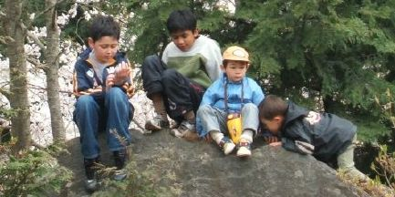 |
| 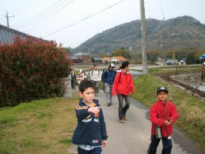 | 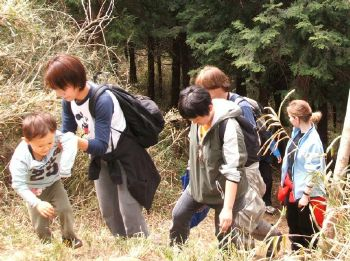 | 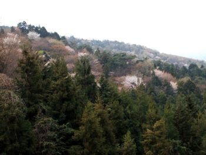 | |
| 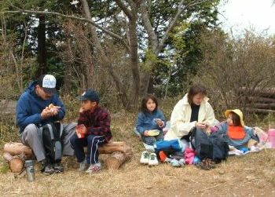 |
I am happy to report that the first
family walk of the club has been successful enough for us to think
of organizing some more. Although families have always been
encouraged to join our walks, we organized this one especially to
encourage children and their parents to join, so that the children
can learn to appreciate and enjoy nature. The study of nature
actually bordered on academic by introduction of Sumi-e art to the
walk. Participants, including children, studied plants and flowers
closely to draw them.
We were 19 adults and 7 children (aged 2 to 11) (8 families). All this not counting the one still unborn, and not counting Ginny and Tadashi who gave a brief appearance. |
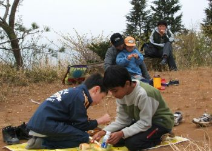 | |
| 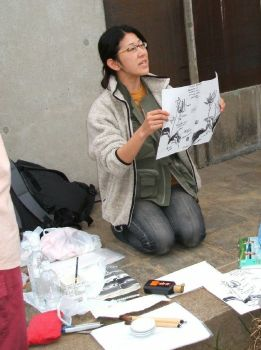 |
The weather forecast was a little
worrying with chances of rain in the afternoon, but we were lucky
and there was in fact more than two hours of diffused sunshine,
after threatening clouds which gathered at about noon. Everyone made
it without difficulty. Children were the most active. A 5-year old
was heard complaining to his father that he was just walking, while
he had been promised a hike!
We climbed from the northern side (with
gentler slopes) and climbed down on the south which has choice of
many trails. We had parked cars at both ends. Sakura trees in bloom
dotted the hillsides. We stopped at Expo memorial near the top for
lunch and Sumi-e. Everyone tried and enjoyed the art.
I thank Ryoko and Ajay for the idea of
introducing Sumi-e and conducting it. And I thank all the
participants for joining to make this trip enjoyable and worthwhile.
|
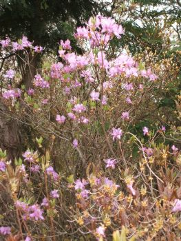 | |
| 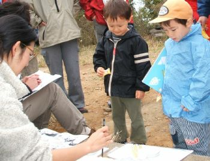 | 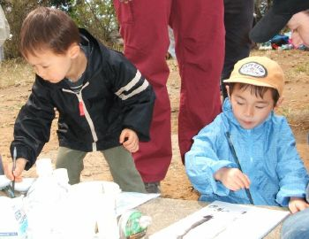 | 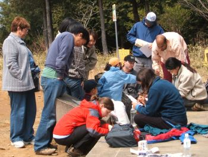 | |
| 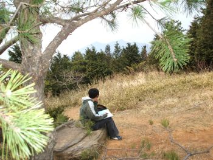 | 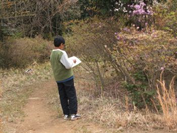 | 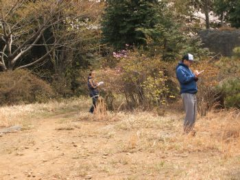 | |
| 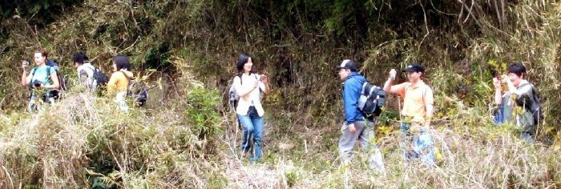 | 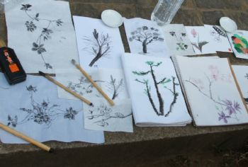 | ||